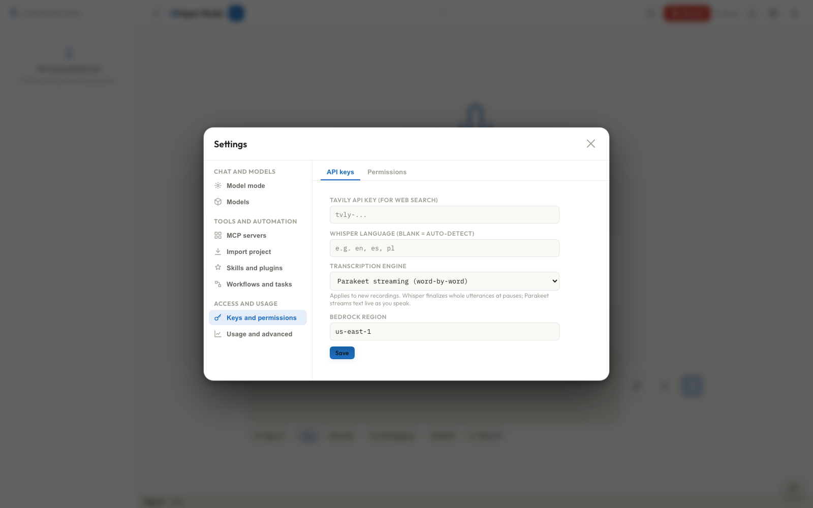

Configuration
Whisper Studio reads settings from five layers, merged into one effective
config that runs your session. This page covers those layers, the environment variables, every
Settings-UI field, the first-run config.json, and how to keep your
secrets safe.
Almost everything is optional. A fresh install runs out of the box with sensible defaults, and you tune it either through the in-app Settings panel (the gear icon) or, for secrets and deployment overrides, through shell environment variables. Nothing here needs a code change.

The five layers
Config is resolved in server/infrastructure/config.py by merging
layers from lowest to highest priority: built-in DEFAULTS, then the shipped
system layer (config.example.json, read live), then your user config,
then the per-project .whisper/settings.json, and finally the
environment overlay. A value in a higher layer wins. Nested objects (like
feature_flags and backends) merge key by key; lists replace
wholesale.
| Layer | Source | Priority | Use for |
|---|---|---|---|
| Environment | TAVILY_API_KEY, HOST, PORT | Highest | Secrets and deployment overrides |
| Project | <workspace>/.whisper/settings.json | High | Per-project model, region, permission mode |
| User | config.user.json in the app home; in a dev checkout (or before migration), the legacy config.json at the repo root is the user layer | Middle | Your deltas: keys, region, added models, per-field overrides, a hide-list |
| System | config.example.json (read-only, ships with the app, read live) | Low | The app-owned model catalog and shipped defaults |
| Code defaults | DEFAULTS in server/infrastructure/config.py | Lowest | Built-in fallbacks you never edit |
The Settings UI edits the user layer. The project layer is a hand-authored file you can check into the repo; the server reads it but never writes it. The environment layer is shell-only: there is no UI field for it, and it exists so a machine (or a CI runner, or a LAN-exposed deployment) can override without touching disk.
The project layer is deliberately narrow. Only a safe subset of keys is honored from
.whisper/settings.json (model and catalog overrides including
chat_models_disabled, region, effort, brief mode, permission mode and explainer,
cost caps, auto-mode rules, model fallback, and feature flags), so a checked-in project file
can never smuggle in, say, a global API key. See
Settings & config keys for the exact per-key breakdown.
Latched per session. A small set of fields (region, model catalog, default model, effort level, brief mode, permission mode) is snapshotted at the first turn of a session and frozen for its lifetime. Changing them mid-conversation in Settings takes effect on your next new session, not the one already running. This keeps a live turn stable and avoids invalidating prompt caches. See Chat & tool orchestration.
First-run config.json
config.json lives at the repo root and is gitignored, because it holds
your Tavily key and any other per-machine settings. It has to be created locally. On the first
run, setup.sh copies the tracked template
config.example.json to config.json for you.
After that, change values either through the Settings UI (gear icon) or by editing the file
directly.
The seeded file leaves tavily_api_key empty. Without a key,
web_search falls back to an Amazon Bedrock AgentCore browser MCP server if you
have enabled one; web_fetch and everything else (chat, transcription, and the
workspace tools) work with no further setup.
The chat-model catalog is a merge, not a copy. The shipped
catalog in config.example.json is always read live as the system
layer, and chat_models entries in your user config merge onto it additively per
key: an entry adds a new model or overrides individual fields of a shipped one. To hide a
shipped model, list its key in chat_models_disabled (there is a visibility
toggle in Settings for this) rather than deleting anything. Only the project layer still
replaces the catalog wholesale.
Transcript condensation (map_reduce_summary)
An oversized transcript is condensed with a map-reduce pass before it reaches the model, so a
multi-hour meeting never overflows the context window or gets silently truncated. The
map_reduce_summary block tunes that pass. The defaults suit most machines, and below
threshold_chars the transcript passes through unchanged with no extra model calls, so
the block is a no-op for ordinary sessions. All sizes below are in characters (roughly four per
token). See Settings & config keys and
Transcript summarization.
| Key | Default | Meaning |
|---|---|---|
enabled | true | Master switch for map-reduce condensation. |
threshold_chars | 600000 | Condense only above this size (about 150k tokens). Below it the transcript passes through unchanged. |
chunk_chars | 150000 | Per-chunk size for the cloud window (about 37k tokens). |
local_chunk_chars | 40000 | Per-chunk size in local mode (about 10k tokens; fits the 16k local window). |
overlap_chars | 800 | Overlap between adjacent chunks so nothing is lost at a boundary. |
map_max_tokens | 1200 | Output cap per chunk extract. |
max_chunks | 40 | Cap on the number of chunks; the chunker re-splits coarser, then hard-caps. |
max_output_chars | 480000 | Cap on the aggregate condensed output in cloud mode (about 120k tokens). |
local_max_output_chars | 24000 | Tighter aggregate cap for the small local window. |
engine | "auto" | "auto" follows the model mode (cloud uses Haiku, local uses the on-device model); force "haiku" or "local" to override. |
Environment variables
Environment variables are the highest-priority layer and the only place to put secrets you would
rather keep off disk. The TAVILY_API_KEY overlay is re-read on every request, so a
rotated key applies immediately without a server restart.
| Name | Default | Effect |
|---|---|---|
HOST | 127.0.0.1 | Bind address. Set HOST=0.0.0.0 to expose the app on your LAN. Localhost-only is the default for a reason (see Security model). |
PORT | 8000 | Backend port. Auto-incremented to the next free port if 8000 is in use, so read the URL the script actually prints. |
BACKEND_PORT | 8000 | Read by vite.config.ts so the dev proxy targets the real backend port. setup.sh sets it from $PORT automatically, so the dev server and backend stay in sync even when the port shifted. |
TAVILY_API_KEY | (unset) | Overrides config.json:tavily_api_key. An empty value is ignored, so the config falls back to whatever is stored. If both are set, the env var wins. |
WHISPER_HOME | (unset) | The app home for a packaged install: when set, all user-mutable state (config.user.json, pricing.json, models/, storage/, skills, plugins, logs) lives under it and the code tree stays read-only. Unset means a dev checkout, with everything at the repo root as before. |
WHISPER_DATA_DIR | (unset) | Relocates app data (result cache, config stores, DBs) on its own; beats the data_dir config key and the app-home default. |
To set the Tavily key the recommended way, export it in your shell profile so rotation is a one-line change:
echo 'export TAVILY_API_KEY=tvly-...' >> ~/.zshrc
source ~/.zshrcThe full lookup table lives in Environment variables.
Settings-UI fields
Click the gear icon to open Settings. These fields write to the user layer. You do not need to
touch config.json by hand for any of them. (A per-project override
goes in a hand-authored .whisper/settings.json instead; the UI never
writes that file.)
| Field | Values | What it does |
|---|---|---|
| Bedrock Region | e.g. us-east-1 | The AWS region for Claude. Must match a region where the model is enabled, or chat returns an access error. Never stored blank. |
| Default Model | Haiku 4.5 · Sonnet 4.6 · Sonnet 5 · Opus 4.6/4.7/4.8 · Opus 5 · Fable 5.0 · GPT-5.4/5.5 · GPT-5.6 Sol/Terra/Luna · on-device models | The model a new session starts with. GPT-5.x runs through the OpenAI-on-Bedrock path; Fable 5.0 needs the data-retention consent flow first; installed on-device models appear only in local mode (a fresh install ships none; add them from Models → Discover). See Model backends & modes. |
| Model Mode | cloud / hybrid / local | Where indexing and retrieval run (config.json:model_mode, plus backends in hybrid). Distinct from the chat-model choice in the toolbar. |
| Feature Flags | toggles | Turn gated features on or off (feature_flags) from the UI without editing the file. The panel lives under Settings → Usage and advanced → Feature flags; progressive_tools (progressive tool disclosure) is one example, with the companion progressive_tools_core_extra / progressive_tools_defer_extra config keys for tuning the split. |
| Effort Level | low / medium / high / extra (alias xhigh) / max / ultracode | The reasoning budget for a turn. Higher means deeper thinking and more tokens. Which levels are offered depends on the model (Opus 4.8, Opus 5, and Fable reach ultracode; Sonnet and older Opus cap at max; GPT-5.5 and 5.6 run none-ultracode; Haiku and local models have none), and the value is clamped to the nearest supported level when you switch models. ultracode is a session mode that adds workflow orchestration; the old auto value is retired. |
| Permission Mode | default / auto / plan / acceptEdits / bypassPermissions / dontAsk | How risky tool calls are gated. See Permissions & approvals. |
| Permissions panel | rules, category defaults, network policy | Under Access and usage → Keys and permissions: per-rule justification notes, a dry-run tester (POST /api/permissions/rules/test), per-category approval defaults (category_modes), and the sandbox network egress policy (network_policy, tiers restrictive / curated / permissive; permissive is the default, meaning no restriction). |
| Import project | a Claude Code or Codex CLI project | Migrates CLAUDE.md/AGENTS.md to WHISPER.md, copies skills, and translates .mcp.json. Source files are never modified. See Installation. |
| Tavily API Key | a key, or blank | Enables the web-search skill. Only needed if you did not set the TAVILY_API_KEY env var; the env var wins if both are present. |
| Cost Limits | USD caps | Per-session (max_session_cost_usd) and per-day (max_daily_cost_usd) Bedrock spend caps. 0 means unlimited. See Cost tracking & budgets. |
Model Mode and Feature Flags
These two deserve a note because they behave a little differently from the rest.
- Model Mode changes which stack runs embeddings, reranking, and entity extraction.
Switching it prompts a reload so the app re-initializes cleanly in the new mode. In
hybrid, you then pick a backend per capability (embed, rerank, NER, index LLM); anything you leave unset falls back to the cloud backend. Each embedder keeps its own index, so switching mode never rebuilds the other one. See Model modes. - Feature Flags toggle features such as hybrid search, the reranker, query rewrite, and
prompt caching without editing
config.json. A toggle is written surgically (only that one boolean changes) and persists immediately, so aligned formatting and the richchat_modelsshape in your config file are preserved.
Secrets hygiene
Treat config.json like a credential
store. It is gitignored, but it still sits on disk in plain JSON with your Tavily key inside.
Do not sync it to untrusted backups, and prefer the env-var path for the Tavily key so the
secret lives in your shell profile rather than in a project file. Rotate keys after sharing your
screen. The /api/config endpoint never returns the raw key (only a masked hint), so
the secret does not leave over the API, only off disk.
Because the environment overlay is re-read on every request, rotation is genuinely painless:
change the export line, run source ~/.zshrc in the shell that started
the server, and the new key is live on the next request. No restart, no config edit.
Editing config.json by hand
You can edit config.json directly, but a few habits keep it healthy:
Keep it valid JSON
If the file fails to parse, the loader treats the user layer as empty rather than crashing, so the effective config falls back to the shipped defaults (code
DEFAULTSplus the liveconfig.example.jsonlayer) and a stray comma silently reverts your settings. Validate before you save.Never blank a required key
bedrock_regionanddefault_chat_modelmust not be empty strings. A blank value is dropped on save and coerced back to a working default on load, so a partial edit will not brick chat.Add models as deltas, hide with the hide-list
To add your own model (or override a field of a shipped one), put just that
chat_modelsentry in your user config; the shipped catalog merges in underneath, so you never need a complete copy. To drop a shipped model from the picker, add its key tochat_models_disabledinstead of deleting it (the visibility toggle in Settings writes this list for you).
Related: Environment variables, Settings & config keys, Model modes, and Installation.